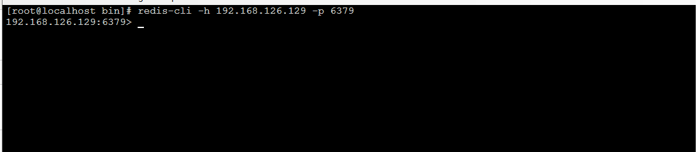
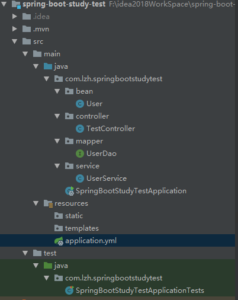
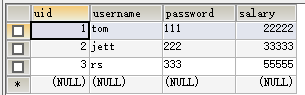
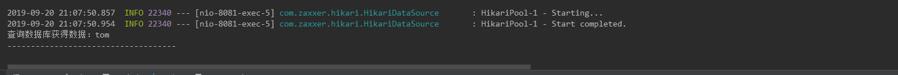
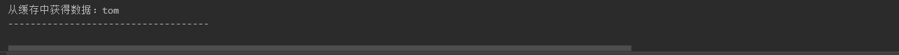

1.Linux系统
2.安装redis（也可以安装docker，然后再docker中装redis，本文章就直接用Linux安装redis做演示）
redis下载地址：http://download.redis.io/releases/redis-4.0.14.tar.gz
找到redis中的redis.conf文件并编辑（在安装路径中找到）
vim ./redis.conf1、找到bind 127.0.0.1并注释掉
默认127.0.0.1只能本地访问，注释掉即可ip访问
2、修改 protected-mode 属性值为no
注释掉并把保护模式禁用以后可以IP访问
3、修改daemonize属性将no 改为yes
将daemonize设置为yes即启动后台运行
4、开放6379端口
/sbin/iptables -I INPUT -p tcp --dport 6379 -j ACCEPT默认不对外开放6379
5、启动redis
redis-server /myconf/redis.confredis-server默认在/usr/local/bin路径下，redis.conf在redis的安装路径下
6、测试连接
redis-cli -h 192.168.126.129 -p 6379redis-cli -h redis服务器IP -p 6379 -a 密码（没有设置redis密码不要写空，否则报错）

项目源码结构

一个user表

pom.xml文件（可以根据自己的需要来添加或修改）
<dependencies>
<dependency>
<groupId>org.springframework.boot</groupId>
<artifactId>spring-boot-starter-web</artifactId>
</dependency>
<!-- mybatis 与 spring boot 2.x的整合包 -->
<dependency>
<groupId>org.mybatis.spring.boot</groupId>
<artifactId>mybatis-spring-boot-starter</artifactId>
<version>1.3.2</version>
</dependency>
<!--mysql JDBC驱动 -->
<dependency>
<groupId>mysql</groupId>
<artifactId>mysql-connector-java</artifactId>
<version>5.1.39</version>
</dependency>
<dependency>
<groupId>org.springframework.boot</groupId>
<artifactId>spring-boot-starter-test</artifactId>
<scope>test</scope>
</dependency>
<dependency>
<groupId>org.springframework.boot</groupId>
<artifactId>spring-boot-starter-data-redis</artifactId>
</dependency>
<dependency>
<groupId>org.springframework.boot</groupId>
<artifactId>spring-boot-starter-cache</artifactId>
</dependency>
</dependencies>下面是springboot的配置文件application.yml，配置redis（里面都有注释解释）
server:
port: 8081
#数据库连接
spring:
datasource:
url: jdbc:mysql://localhost:3306/mytest_springboot_cache?useUnicode=true
driver-class-name: com.mysql.jdbc.Driver
username: root
password: lzh
## Redis 配置
redis:
## Redis数据库索引（默认为0）
database: 0
## Redis服务器地址
host: 192.168.126.129
## Redis服务器连接端口
port: 6379
## Redis服务器连接密码（默认为空）
password:
jedis:
pool:
## 连接池最大连接数（使用负值表示没有限制）
#spring.redis.pool.max-active=8
max-active: 8
## 连接池最大阻塞等待时间（使用负值表示没有限制）
#spring.redis.pool.max-wait=-1
max-wait: -1
## 连接池中的最大空闲连接
#spring.redis.pool.max-idle=8
max-idle: 8
## 连接池中的最小空闲连接
#spring.redis.pool.min-idle=0
min-idle: 0
## 连接超时时间（毫秒）
timeout: 1200
#将themilef的默认缓存禁用，热加载生效
thymeleaf:
cache: false
#mybatis的下划线转驼峰配置
configuration:
map-underscore-to-camel-case: true
#另外一种打印语句的方式
log-impl: org.apache.ibatis.logging.stdout.StdOutImpl
#打印sql时的语句
logging:
level:
com:
acong:
dao: debug
file: d:/logs/bsbdj.log
接着是实体类，这个比较简单就不多说了
package com.lzh.springbootstudytest.bean;
import java.io.Serializable;
/**
* @author lzh
* create 2019-09-18-22:32
*/
public class User implements Serializable {
private static final long serialVersionUID = 1L;
private int uid;
private String userName;
private String passWord;
private int salary;
public int getUid() {
return uid;
}
public void setUid(int uid) {
this.uid = uid;
}
public String getUserName() {
return userName;
}
public void setUserName(String userName) {
this.userName = userName;
}
public String getPassWord() {
return passWord;
}
public void setPassWord(String passWord) {
this.passWord = passWord;
}
public int getSalary() {
return salary;
}
public void setSalary(int salary) {
this.salary = salary;
}
public User(int uid, String userName, String passWord, int salary) {
super();
this.uid = uid;
this.userName = userName;
this.passWord = passWord;
this.salary = salary;
}
public User() {
super();
}
}
这是controller类，用于暴露接口访问
package com.lzh.springbootstudytest.controller;
import com.lzh.springbootstudytest.bean.User;
import com.lzh.springbootstudytest.service.UserService;
import org.springframework.beans.factory.annotation.Autowired;
import org.springframework.stereotype.Controller;
import org.springframework.web.bind.annotation.RequestMapping;
import org.springframework.web.bind.annotation.RequestParam;
import org.springframework.web.bind.annotation.ResponseBody;
import org.springframework.web.bind.annotation.RestController;
import java.util.HashMap;
import java.util.List;
import java.util.Map;
/**
* @author lzh
* create 2019-09-18-22:36
*/
@RestController
public class TestController {
@Autowired
private UserService userService;
@RequestMapping("/queryAll")
public List<User> queryAll(){
List<User> lists = userService.queryAll();
return lists;
}
@RequestMapping("/findUserById")
public Map<String, Object> findUserById(@RequestParam int id){
User user = userService.findUserById(id);
Map<String, Object> result = new HashMap<>();
result.put("uid", user.getUid());
result.put("uname", user.getUserName());
result.put("pass", user.getPassWord());
result.put("salary", user.getSalary());
return result;
}
@RequestMapping("/updateUser")
public String updateUser(){
User user = new User();
user.setUid(1);
user.setUserName("cat");
user.setPassWord("miaomiao");
user.setSalary(4000);
int result = userService.updateUser(user);
if(result != 0){
return "update user success";
}
return "fail";
}
@RequestMapping("/deleteUserById")
public String deleteUserById(@RequestParam int id){
int result = userService.deleteUserById(id);
if(result != 0){
return "delete success";
}
return "delete fail";
}
}
配置redistemplate序列化
package com.lzh.springbootstudytest.config;
import com.fasterxml.jackson.annotation.JsonAutoDetect;
import com.fasterxml.jackson.annotation.PropertyAccessor;
import com.fasterxml.jackson.databind.ObjectMapper;
import org.springframework.cache.CacheManager;
import org.springframework.cache.annotation.CachingConfigurerSupport;
import org.springframework.cache.annotation.EnableCaching;
import org.springframework.context.annotation.Bean;
import org.springframework.context.annotation.Configuration;
import org.springframework.data.redis.cache.RedisCacheConfiguration;
import org.springframework.data.redis.cache.RedisCacheManager;
import org.springframework.data.redis.cache.RedisCacheWriter;
import org.springframework.data.redis.connection.RedisConnectionFactory;
import org.springframework.data.redis.core.*;
import org.springframework.data.redis.serializer.Jackson2JsonRedisSerializer;
import org.springframework.data.redis.serializer.StringRedisSerializer;
import java.time.Duration;
/**
* @author lzh
* create 2019-09-24-15:07
*/
@Configuration
@EnableCaching
public class RedisConfig extends CachingConfigurerSupport {
/**
* 选择redis作为默认缓存工具
* @param redisConnectionFactory
* @return
*/
/*@Bean
//springboot 1.xx
public CacheManager cacheManager(RedisTemplate redisTemplate) {
RedisCacheManager rcm = new RedisCacheManager(redisTemplate);
return rcm;
}*/
@Bean
public CacheManager cacheManager(RedisConnectionFactory redisConnectionFactory) {
RedisCacheConfiguration redisCacheConfiguration = RedisCacheConfiguration.defaultCacheConfig()
.entryTtl(Duration.ofHours(1)); // 设置缓存有效期一小时
return RedisCacheManager
.builder(RedisCacheWriter.nonLockingRedisCacheWriter(redisConnectionFactory))
.cacheDefaults(redisCacheConfiguration).build();
}
/**
* retemplate相关配置
* @param factory
* @return
*/
@Bean
public RedisTemplate<String, Object> redisTemplate(RedisConnectionFactory factory) {
RedisTemplate<String, Object> template = new RedisTemplate<>();
// 配置连接工厂
template.setConnectionFactory(factory);
//使用Jackson2JsonRedisSerializer来序列化和反序列化redis的value值（默认使用JDK的序列化方式）
Jackson2JsonRedisSerializer jacksonSeial = new Jackson2JsonRedisSerializer(Object.class);
ObjectMapper om = new ObjectMapper();
// 指定要序列化的域，field,get和set,以及修饰符范围，ANY是都有包括private和public
om.setVisibility(PropertyAccessor.ALL, JsonAutoDetect.Visibility.ANY);
// 指定序列化输入的类型，类必须是非final修饰的，final修饰的类，比如String,Integer等会跑出异常
om.enableDefaultTyping(ObjectMapper.DefaultTyping.NON_FINAL);
jacksonSeial.setObjectMapper(om);
// 值采用json序列化
template.setValueSerializer(jacksonSeial);
//使用StringRedisSerializer来序列化和反序列化redis的key值
template.setKeySerializer(new StringRedisSerializer());
// 设置hash key 和value序列化模式
template.setHashKeySerializer(new StringRedisSerializer());
template.setHashValueSerializer(jacksonSeial);
template.afterPropertiesSet();
return template;
}
/**
* 对hash类型的数据操作
*
* @param redisTemplate
* @return
*/
@Bean
public HashOperations<String, String, Object> hashOperations(RedisTemplate<String, Object> redisTemplate) {
return redisTemplate.opsForHash();
}
/**
* 对redis字符串类型数据操作
*
* @param redisTemplate
* @return
*/
@Bean
public ValueOperations<String, Object> valueOperations(RedisTemplate<String, Object> redisTemplate) {
return redisTemplate.opsForValue();
}
/**
* 对链表类型的数据操作
*
* @param redisTemplate
* @return
*/
@Bean
public ListOperations<String, Object> listOperations(RedisTemplate<String, Object> redisTemplate) {
return redisTemplate.opsForList();
}
/**
* 对无序集合类型的数据操作
*
* @param redisTemplate
* @return
*/
@Bean
public SetOperations<String, Object> setOperations(RedisTemplate<String, Object> redisTemplate) {
return redisTemplate.opsForSet();
}
/**
* 对有序集合类型的数据操作
*
* @param redisTemplate
* @return
*/
@Bean
public ZSetOperations<String, Object> zSetOperations(RedisTemplate<String, Object> redisTemplate) {
return redisTemplate.opsForZSet();
}
}
接着是Mapper持久层Dao，这里主要用注解写比较方便，也可以使用mybatis的xml配置文件写sql语句
package com.lzh.springbootstudytest.mapper;
import com.lzh.springbootstudytest.bean.User;
import org.apache.ibatis.annotations.*;
import java.util.List;
/**
* @author lzh
* create 2019-09-18-22:32
*/
@Mapper
public interface UserDao {
@Select("select * from user")
List<User> queryAll();
@Select("select * from user where uid = #{id}")
User findUserById(int id);
@Update("UPDATE USER SET username = CASE WHEN (#{userName} != NULL) AND (#{userName} != '') THEN #{userName},PASSWORD = CASE WHEN (#{passWord} != NULL) AND (#{passWord} != '') THEN #{passWord},salary = CASE WHEN (#{salary} != 0) THEN #{salary} WHERE uid = #{uid}")
int updateUser(@Param("user") User user);
@Delete("delete from user where uid = #{id}")
int deleteUserById(int id);
}
service层，这里主要是使用redis模板来写
package com.lzh.springbootstudytest.service;
import com.lzh.springbootstudytest.bean.User;
import com.lzh.springbootstudytest.mapper.UserDao;
import org.springframework.beans.factory.annotation.Autowired;
import org.springframework.data.redis.core.RedisTemplate;
import org.springframework.data.redis.core.ValueOperations;
import org.springframework.stereotype.Service;
import java.util.List;
import java.util.concurrent.TimeUnit;
/**
* @author lzh
* create 2019-09-18-22:33
*/
@Service
public class UserService {
@Autowired
private UserDao userDao;
@Autowired
private RedisTemplate redisTemplate;
public List<User> queryAll() {
return userDao.queryAll();
}
/**
* 获取用户策略：先从缓存中获取用户，没有则取数据表中 数据，再将数据写入缓存
*/
public User findUserById(int id) {
String key = "user_" + id;
ValueOperations<String, User> operations = redisTemplate.opsForValue();
//判断redis中是否有键为key的缓存
boolean hasKey = redisTemplate.hasKey(key);
if (hasKey) {
User user = operations.get(key);
System.out.println("从缓存中获得数据："+user.getUserName());
System.out.println("------------------------------------");
return user;
} else {
User user = userDao.findUserById(id);
System.out.println("查询数据库获得数据："+user.getUserName());
System.out.println("------------------------------------");
// 写入缓存
operations.set(key, user, 5, TimeUnit.HOURS);
return user;
}
}
/**
* 更新用户策略：先更新数据表，成功之后，删除原来的缓存，再更新缓存
*/
public int updateUser(User user) {
ValueOperations<String, User> operations = redisTemplate.opsForValue();
int result = userDao.updateUser(user);
if (result != 0) {
String key = "user_" + user.getUid();
boolean haskey = redisTemplate.hasKey(key);
if (haskey) {
redisTemplate.delete(key);
System.out.println("删除缓存中的key-----------> " + key);
}
// 再将更新后的数据加入缓存
User userNew = userDao.findUserById(user.getUid());
if (userNew != null) {
operations.set(key, userNew, 3, TimeUnit.HOURS);
}
}
return result;
}
/**
* 删除用户策略：删除数据表中数据，然后删除缓存
*/
public int deleteUserById(int id) {
int result = userDao.deleteUserById(id);
String key = "user_" + id;
if (result != 0) {
boolean hasKey = redisTemplate.hasKey(key);
if (hasKey) {
redisTemplate.delete(key);
System.out.println("删除了缓存中的key:" + key);
}
}
return result;
}
}
这里主要是使用RedisTemplate来对远程redis操作，每次访问controller暴露的接口，首先判断redis缓存中是否存在该数据，若不存在就从数据库中读取数据，然后保存到redis缓存中，当下次访问的时候，就直接从缓存中取出来。这样就不用每次都执行sql语句，能够提高访问速度。 但是在保存数据到缓存中，通过设置键和值和超时删除，注意设置超时删除缓存时间不要太长，否则会给服务器带来压力。
执行spring boot的启动类，访问http://localhost:8081/findUserById?id=1

再次访问http://localhost:8081/findUserById?id=1就是从缓存中获取保存的数据
